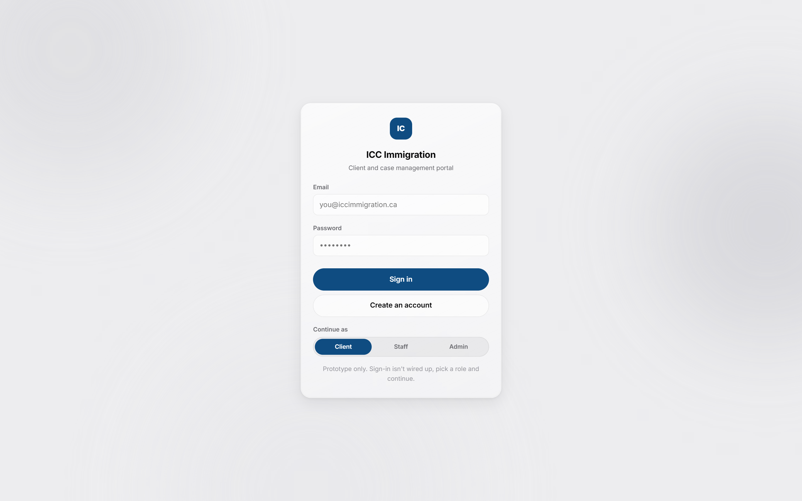
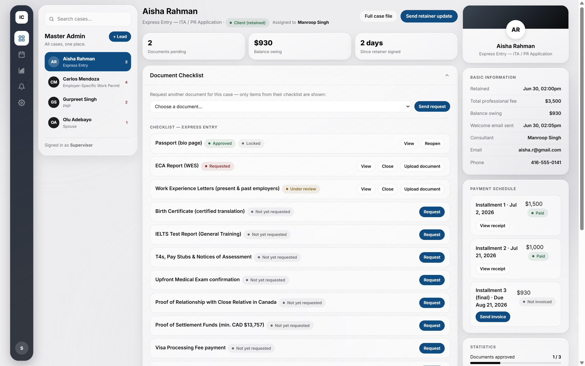
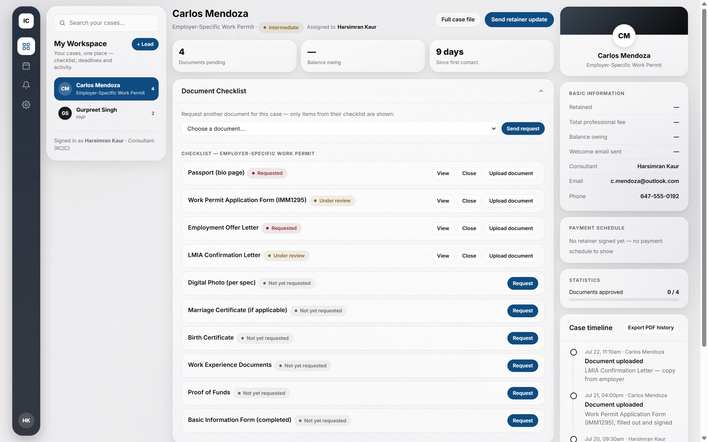
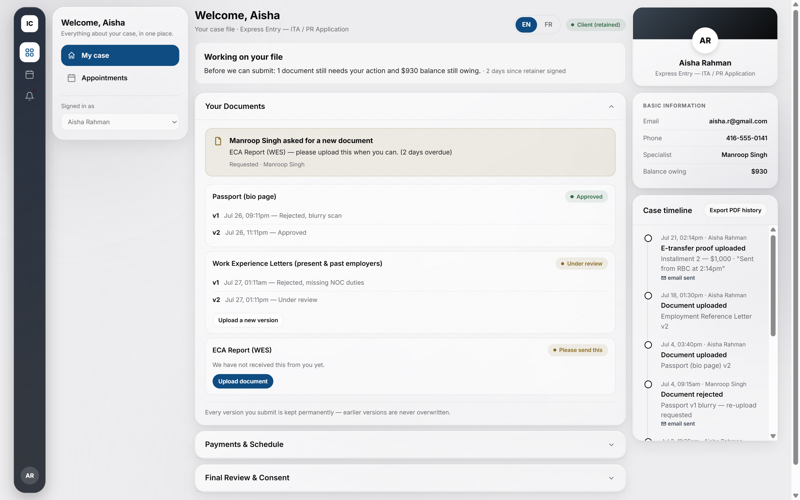
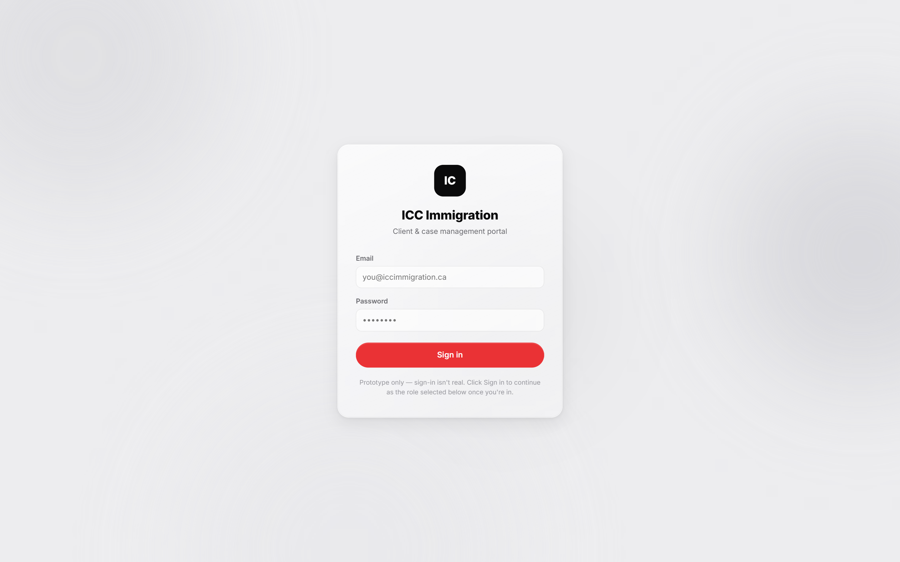
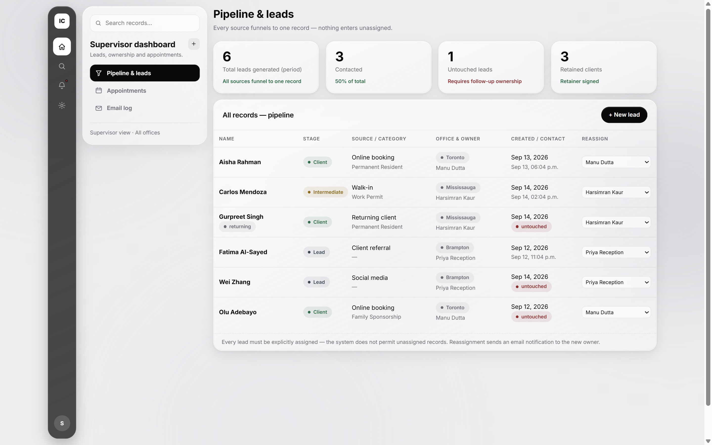
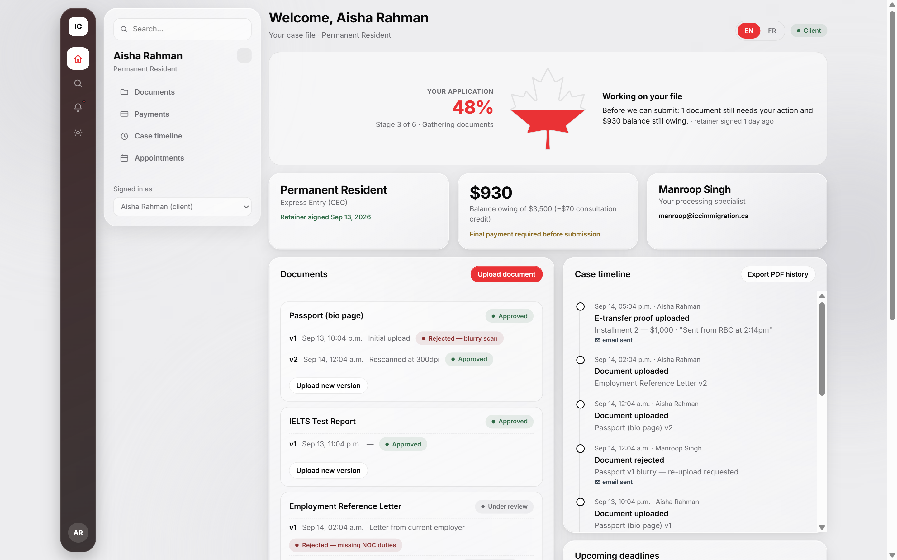
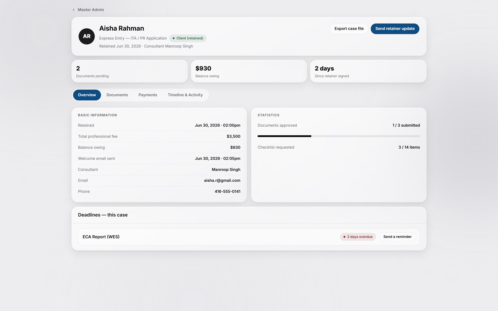
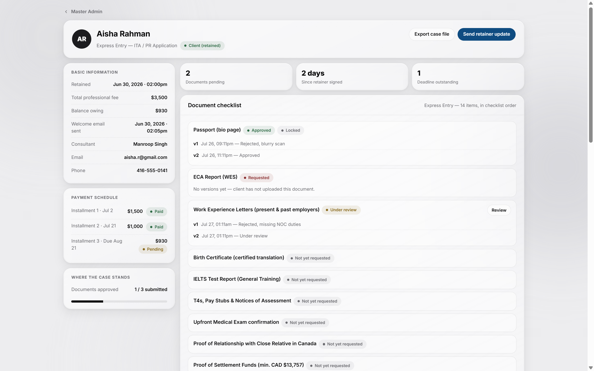
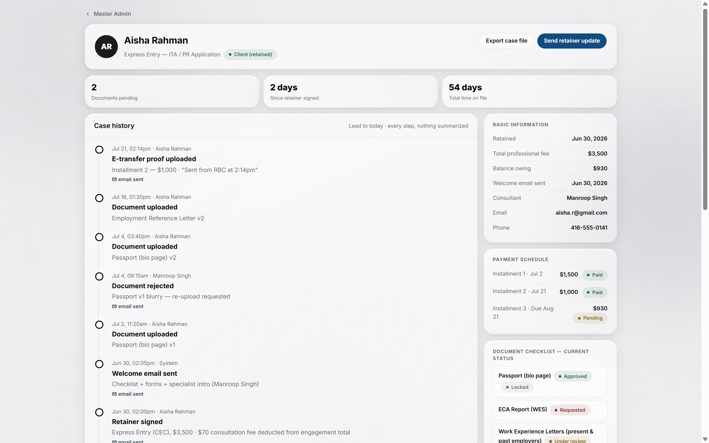

Design's Seat at the Table
ICC Immigration's portal has a backend developer building the real thing. I'm the UX/UI designer, full stop. That distinction sounds obvious until a fast-moving client project starts pulling you toward decisions that aren't yours to make.
Sign-in, and the three role views it routes to. Live captures of the running HTML prototype.




The brief came from a July 2026 client call: ICC wanted their portal to feel like their own version of Officio, the case-management software most Canadian immigration consultancies already use. The stage-rail IA borrows boundless.com's clarity, so every screen answers one question first, where is this case right now, for three audiences who need that answer at very different scales.
ICC's own brand starts from navy and teal, pulled from iccimmigration.ca. Early exploration kept that pairing. Every session since has stayed strictly monochrome instead, so the real signal stays status (approved, under review, rejected, paid), not brand color.
Status colors (success, warning, danger, info) exist as a separate token set, reserved for badges only. They never touch brand elements, so a red badge always reads as "rejected", never as "this button is dangerous."
Inter throughout, one type family for admin density and client comfort alike. Cards use a soft glass treatment (backdrop blur, hairline borders) over a flat paper background. Compact spacing for staff and admin views, a more comfortable rhythm on the client side, same token system underneath both.
Repetitive execution, batch component updates, spec write-ups, ran alongside Claude (Anthropic's AI) for the more mechanical parts of the workflow. Every design call in this case study is mine.
HTML PROTOTYPE FIRST, FIGMA SECOND
An earlier reference prototype used red as its primary color. Red was already spoken for: status badges use it for "rejected" and "danger", so a red primary button competes with that meaning instead of reinforcing it. There's no clean way to soften that clash once red has two jobs in the same interface. Some screens still carried the old red into later sessions before every one of them caught up to a dedicated brand blue.

Seven real turning points across 27+ sessions, what changed and why, pulled straight from the build log.
Started with a pipeline-first admin home: a leads table up front, cases opened from a list.
Why I moved on from it: once real case work started outweighing lead intake, the admin's day was mostly spent inside one case, not scanning a table of them. Flipped the home screen to a case-first layout instead.

Workflow locked: build in HTML first, port to Figma only after I sign off on it.
Why: faster to iterate on layout and logic in code than to redo high-fidelity Figma work every time a screen changed shape.
Built due-date lists, an admin-editable Notices board, per-role dashboard notifications, and a shared Templates library.
Why: the concrete asks behind the client's "our version of Officio" brief, none of them guesses.
Prototyped a maple-leaf progress indicator for the client dashboard, on-brand for a Canadian immigration product, then rejected it for a plain-language status banner.
Why: a leaf that fills in reads as decoration first, status second. A client has to study it to know where their case stands. A plain sentence says the same thing at a glance.

Full Case File shipped as its own history-centered page, after three other layouts were built and rejected.
Why: the first three concepts just reorganized existing fields. The real ask was the client's full history, not a dashboard.



Three client-requested changes shipped in Figma in one pass: a wizard toggle relabeled, a real empty-state for the Documents card, and an Assign-to staff control.
Why: direct feedback from a client call, turned around before the next one.
Notices audience selector locked to three fixed segments, no person search.
Why: broadcasts and 1:1 client contact are different features. Merging them into one picker would have confused both.
Merged three separate Master files into one app: a login screen built from a blank page, the employee view scoped to the logged-in consultant, and the admin payment editor rebuilt as an accordion.
Why: one coherent prototype was overdue before the next Figma push, three parallel files were starting to drift.
Three real judgment calls from the build. Each one changed the direction of a screen, or the direction of the working relationship with the rest of the team.
A routine review of an open client request surfaced something that read as backend work, a dummy invoice-to-payment-to-receipt flow, when the ask was for a UX pass.
Drew the line explicitly: I'm not the developer on this project. Kept suggestions scoped to layout, hierarchy, IA, and interaction, flagging backend and data-modeling concerns as open items instead of designing implementations for them.
A handoff boundary the whole team could rely on. Backend concerns get flagged and handed off, not quietly designed into the UI by someone who isn't building it.
Direct feedback from Tenzin (WIMTACH's R&D lead) on my admin case-detail work: the full case file needs to be its own dedicated screen, not a popup, nothing hidden behind extra clicks.
Built three competing concepts (tabbed, full scroll, split fixed-left/scrolling-right) before touching Figma. All three just reorganized the same fields already on the main Admin screen, so none of them actually solved it. Reframed the page around what it needed to be instead: the client's full history, not a dashboard.
Superseded all three with a history-centered version built around the full case timeline from lead creation onward, with a redesigned document checklist as the only supporting sidebar.
An admin "Post a Notice" feature needed an audience selector. The obvious build was a people-picker: search and select individual clients or staff.
Pushed toward how real products handle this instead: notices broadcast to a segment (Everyone, All clients, All employees), no search, no autocomplete. One-to-one messages happen somewhere else entirely, on the case file, not in a broadcast composer.
A simpler component, and a clearer product line. Broadcast and 1:1 client contact stayed two separate features instead of merging into one confusing one.